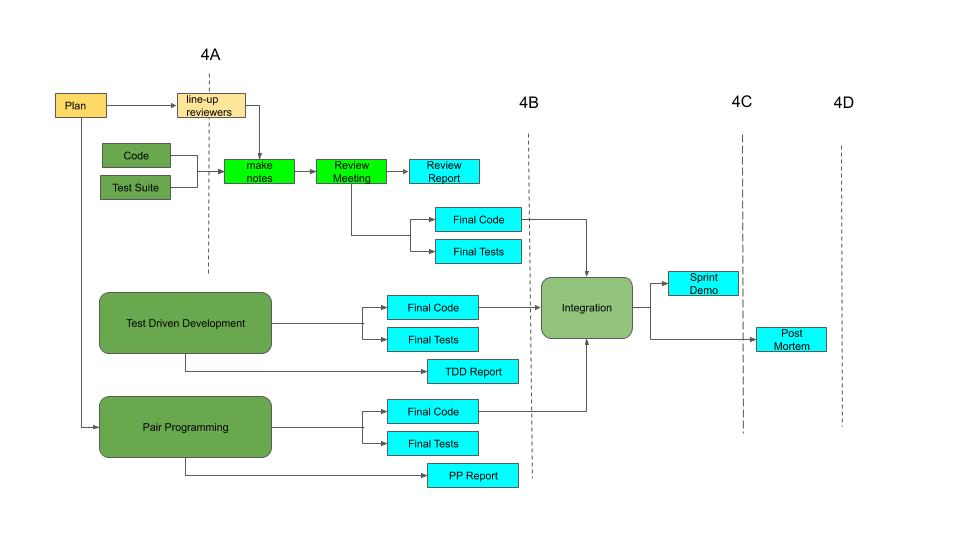

Project Phase 4
Implementation and Testing Sprint
The first three projects took us through all of the activities that precede
implementation. In this final project you will
(using skills you mastered long before you got here)
actually implement the components you designed in phase 3.
But, by now it should come as little surprise to you that only part of your time will be spent coding
(and if you have done it right, very little of your time will be spent debugging).
An implementation is not completed when it finally compiles;
We must convince ourselves (and others) of its correctness.
If we are implementing this as part of a team effort
(or for use by others)
we will probably be expected to package it and hand it off:
- provide a (perhaps brief) precise description of what we are delivering.
- provide a demonstration of its building (e.g. a check-out, build, and run).
- provide a demonstration that it meets its requirements (e.g. by passing a test of those requirements).
This final project also includes multiple activities, but no intermediate deliverables.
You will complete your implementation and testing, and (when you are done) you
will conduct a Sprint Review wherein you present your completed
implementation (to your product owner)

3 less 10% for each unexcused late day.
Each team member will use their code in one of the exercises
(Pair Programming, Test Driven Development, or Code Review),
and all team members will participate (as a submitter or reviewer)
in at least one code review. While most of these activities will involve selected
individuals, you are encouraged to discuss each of these activities as a team,
and the reports from most of those activities will be graded as team deliverables.
You may note that there is no management plan or grade associated with this
project. You should, by now be able to plan and coordinate activities for
yourselves, and you are already being graded on your ability to deliver the
required work on schedule ... which is the point. But, be warned:
- you will need to test your component with other peoples' components,
so if one person is late, everybody will be delayed and then find
themselves in a last minute crunch.
- some people may not be able to fully test their own components
until other components are available. You need to understand
these dependencies and have a solid plan for ensuring that
needed components are available by the time they are needed.
- regular (e.g. daily) stand-ups will encourage you to keep you
moving and identify problems as quickly as possible (so they
can be addressed as quickly as possible).
- when build, itegration, and testing problems occur, you will
almost surely have to work as a group to address them.
It is best if you schedule integrations so that the relevant
component owners are all available to exercise the results
and deal with any problems that arise.
P4A.1 Final Code
The primary activity in this project is for each person to implement
and test the component(s) they designed in project 3. There will be
many processes and exercises surrounding this implementation, but
the primary deliverable is working code that implements the requirements
and specifications set out in project 3.
The primary deliverable is source files and scripts (e.g. ant/Makefile) required to build them.
Make sure that you document the build procedure and the environment that is required to build your
components (e.g. in a README.md), because part of your grade will depend on
the grader being able to independently build your product from the checked-in sources
and instructions.
If this is not practical (e.g. because your component cannot be built on a basic
Linux developer desktop) make arrangements with the professor (or Grutor) to have him/her
either do a check-out and build-from-scratch on an appropriate system, or watch you do so.
You should also re-submit URLs for the specifications and design for this component
(from project 3) with any changes you have made since then. These are the standard
against which the completeness and correctness of your implementation will be judged.
After you have completed all of your implementation (including reviews, testing
and correction) and you believe your code is in final form
- prepare your source code (ideally ASCII text in file(s) with a language appropriate name)
- include a description of the build instructions and required environment in
a README.md file.
- put a standard submission prologue into a new file
(code_4a.txt) which includes:
- URL for the final component specifications
- URL for the final component design
- URL for the README and source file(s) in your repo ...
so we can examine their history
- up-load it for submission (each person needs to do this for themselves)
It is likely that you will be submitting your code as part of a large repo, and
I will have a difficult time figuring out which files are which parts of who's
submissions. If you are submitting more than a few (1-4) files, please include
a table of contents, describing all of the directories and files in your submission.
This is not merely for grading ... you will find that many repos include a
README.MD that provides an overview of the contained files.
Each code submission will be graded on the basis of:
- 20% completeness and correctness with respect final specifications
- 16% being implemented as described in the final design
- 16% significant amount of non-trivial code
- 16% code quality (reasonable use of language/toolkit features, simplicity, efficiencty)
- 16% readability (module and method comments, algorithmic comments, use of white-space)
- 8% organization, build environment and instructions described in README.md
- 8% grader is able to do (or observe) a successful clone and build from scratch
P4A.2 Final Test Suite Results
Each team member will, for his/her component, implement the
test plan proposed in project 3, and run (and pass) those tests against
their component implementation.
The execution of your test cases should be automated (e.g. so that
all tests can be run with a single command), and all of the test
cases and scripts should be checked in to your repo.
Make sure that you document the environment and procedure for running
these tests, because part of your grade will depend on the grader being able to
independently test your product from the checked-in sources and instructions
(in a README.md file).
If this is not practical (e.g. because your component cannot be tested on a
basic Linux developer desktop)
make special arrangements with the professor (or Grutor) to have
him/her do a check-out and build-and-test-from-scratch
(or watch you do so) on an appropriate system.
It is possible that you will, as a result of lessons learned during
the implementation, decide you want to change your test plan. If this
happens
- update your project 3 test plan accordingly
- include, with your submission, a summary and explanation of the changes
After you have completed all of your implementation and testing, and
you believe your test suite to be entirely complete
- prepare your source code (ideally ASCII text in file(s) with a language appropriate name)
- include a description of the required build and execution environment and the
build and run instructions in a README.md file.
- include a file (output_4a.txt) containing the captured output from
a successful run of your test suite
- put a standard submission prologue into a new file
(test_4a.txt) which includes:
- URL for the final component specifications and requirements
- URL for the final test plan
- URL for the source file(s) in your repo ... so we can examine their history
- up-load them for submission (each person needs to do this for themselves)
This activity and report be graded on the basis of:
- 20% completeness and full execution with respect to the final test plan
- 16% test cases that thoroughly verify assertions,
including non-trivial white-box test cases
- 16% full automation, with clear indications of what assertions are
being tested and pass/fail results for each (and the entire suite)
- 16% code quality (reasonable use of language/toolkit features,
reasonable setup/cleanup, simplicity, efficiency)
- 8% readability (module and method comments, algorithmic comments, use of white-space)
- 8% clear comments, in every test-case, about the assertion being tested
and the means of exercising it and ascertaining passage
- 8% organization, build environment and instructions described in README.md
- 8% grader is able do (or observe) a clone-from scratch, build, test and pass,
involving very few commands.
P4B.1 Pair Programming Exercise
At least one member of the team will ask another member to join
them for at least one pair-programming session.
A meaningful pair-programming exercise should produce ~200 lines of code (including tests).
How you divide up your effort (think/code, code/review, code/test) is entirely
up to you, and you are welcome to try multiple/various approaches.
You should, during this session, do regular (e.g. hourly) commits, and
each commit comment should describe the division of responsibilities (who was doing what).
NOTES:
- The module used for this exercise must be of moderate to significant complexity
(to benefit from two minds), or no points will be earned.
- The commit comments must describe the division of work, or no points will be earned.
- What ever component this is done for should not also be used for code review or TDD.
After the end of each pair-programming session, each of the
people involved should jot down notes on what happened. After
the component has been completed, the two people should get
together (ideally discussing it with the entre team) and
write up a report on the experience. This report should cover:
- what role divisions you tried and how you decided how to organize those activities.
- how effectively each persons time was used (with each division of roles).
- the speed of code development, vs working alone.
- the quality of the code, vs working alone.
- pleasant or unpleasant aspects of the experience.
- how you would do this differently next time.
When you are ready to submit this report for grading
- prepare your report (ideally in an ASCII text file named pair_report.txt)
- put a standard submission prologue onto the front of it
which includes:
- URLs for the file(s) created during the pair programming exercise.
- references to the commits done during the pair programming sessions
- up-load them for submission (only one person on the team needs to do this)
This activity and report be graded on the basis of:
- 20% documentation of collaboration in commit comments
- 20% reasonable role divisions, reasonably carried out
- 20% amount of work accomplished in this mode
- 20% quality of work accomplished in this mode
- 20% reasonable insights into the process
P4B.2 Code Review
At least one member of the team will write all of his/her code,
and before running test suites against it, submit that code for
review by the other members of their team.
The other team members
will study the code, prepare notes and conduct a code review,
producing a report with must-fix/should-fix/advice items.
The author will make the appropriate revisions, and then move on
to testing. After the code is working, the author will discuss
the process with the rest of the team and then write
up a report on the process.
The author will prepare a review package including references
to the component requirements, specifications, and design (perhaps modified)
from project 3, as well as the implementing code.
Other team members will review that package and prepare
written notes, which will be up-loaded to Sakai
(e.g. in ASCII text files named notes_4b.txt)
well prior to the review.
After the review, the author will prepare a formal report
(listing all important conclusions) and checked in to github.
The author will address all of the raised issues, and then complete the
testing. The commit comments for all such changes should mention the
review issue to which they respond.
After completing the testing (and any other required changes) the author
will add notes (to the review report) about how the testing went and what
(if any) additional problems were discovered.
NOTES:
- The module used for this exercise must be of moderate to significant complexity
(to benefit from review), or no points will be earned.
- What ever component this is done for should not also be used for pair programming or TDD.
The author's review report should include (in addition to the usual information):
- how valuable the input received from the code review process was,
and what kinds of problems it turned up.
- what kinds of problems remainined in the code after the code
review process, and why they weren't found.
- the relative merits of doing code review before or after testing.
- would knowing that you were going to have a code review have
caused you to make any changes to your test plan?
- how would you do this differently next time?
When you are ready to submit this report for grading
- prepare your report (ideally in an ASCII text file named review_4b.txt)
- put a standard submission prologue onto the front of it
which includes:
- URLs for the reviewed file(s).
- up-load it for submission (only one person on the team needs to do this)
The grading of the code review exercise will be based on:
- 10% notes: appropriate comments, reasonably organized, submitted before review
- 40% notes: thoroughness of study to which they attest
- 10% report: completness with respect to issues raised
- 10% report: clear disposition of every issue
- 20% report: code improvement value gained from the review process
- 10% report: insights gained regarding code reviews
P4B.3 Test Driven Development
At least one member of the team will use Test Driven Development to
implement his/her component, building and running the test cases for
each increment of code as the new code is added. The rewards for
this approach should be:
- the there should be little debugging to do, and what little
there is should be quite simple.
- by the time the coding is done, most of the testing will also be done.
But it will require the test framework to be working first, and more up-front
planning about the order in which things should be implemented.
Write-up and commit plan before you start coding.
There are a few tricks to this planning:
- there is a natural order to implementation and testing, because
some features fundamentally depend on others. These dependencies
must be recognized.
- some test cases may be only applicable to incomplete code
(e.g. because they proxy for code that has not yet been written)
and become obsolete after the code has been completed. These
represent a waste of work and should be avoided as much as
possible.
As evidence that you did infact follow a TDD process, and for keeping a
record of the problems found, please:
- make sure that you commit each test case before
committing the code it tests, or no points will be earned.
(Note that we are not asking you to prove that you failed
the test before you wrote the code).
- after you have passed the tests, commit the updated code
(and perhaps test cases), with comments describing
the problems found and fixed during the testing, and
the tests passed.
If they worked first time (this will happen) follow this up with
a trivial commit and a comment to that effect.
- do not move on to implementing new functionality until
you have passed all the tests for the existing functionality.
If tests for different modules/classes are checked in
as a batch, no points will be earned.
NOTE:
What ever component this is done for should not also be used for code review or pair programming.
After completing development, the/each person who uses this methodology
will discuss the experience with the team and write a brief report, covering
what they did, and specifically addressing the following questions:
- how the implementation/testing order was decided, and how the chosen order worked.
- the efficiency of the process was (e.g. how much time went into building
test cases that were only useful during the construction process).
- to what extent do you believe that knowing how you were going to
test the code caused you to write code that was more correct?
- were there bugs that showed up later that were not found by the
TDD process? If so, why do you think they were not turned up
earlier?
- how would you do this differently next time?
When you are ready to submit this report for grading
- prepare your report (ideally in an ASCII text file named tdd_4b.txt)
- put a standard submission prologue onto the front of it
which includes:
- URLs for the files containing the code and test-cases.
- up-load it for submission (only one person on the team needs to do this)
This activity and report be graded on the basis of:
- 10% a reasonable plan for implementation order (checked in before starting)
- 10% automation framework enabled testing from the start
- 20% tests were written and passed incrementally (from the commit history)
- 20% each test meaningfully validated the associated code (from the commit history)
- 20% tests were committed before the code they tested
- 20% reasonable insights gained from the process
P4C Integration and Sprint Review/Demo
You have built your components and test suites, and you have
passed your tests.
You were advised to give some thought to independent development
and the integration process when you chose these components for
specification, design and implementation.
It was further suggested that you should have been doing
continuous integration
(full product builds, starting with trivial mocks of each component)
since the middle of project 3.
You should now be able to combine your components and demonstrate
functionality for the integrated whole.
- If the combination of your components is a complete
product, integration means combining the pieces
together and running test cases to confirm whole-product
functionality.
- If the combination of your components is less
than a complete product, but some components provide
services to others, integration might be a matter of
building them together and running test cases to confirm
that the client components still/now work with the
services being supplied by others.
Now it is time for you to review what you have produced with your
"product owner".
At the end of each sprint, the team presents the work that was
completed during that sprint to the product owner. This is, in part,
ceremonial (the team can claim success and receive feedback on the
work they have completed) but it is also the SCRUM
acceptance/sign-off process:
- the team briefly reviews the requirements to have been
met and demonstrates that the product now meets them.
- the team overviews the reviews and testing that have been done
to ensure the quality of the delivered code.
- the product owner decides whether or not this work
has actually been completed (i.e. is ready to be
delivered to users).
- velocity points are earned for accepted work.
When higher level modules depend on lower level modules,
the correct execution of those higher level modules may be adequate
evidence of successful integration. But if the implemented
modules are parallel, it may be necessary to create an
additional piece to exercise them all together.
Part of the score is based on a demonstration that these
modules are all working together.
Your review presentation should include:
- a brief summary of the functionality of each of the components
built during this sprint, and the (component level) requirements
each was to meet.
- a brief overview (a slide will do) of the scope of the automated testing plan for
each component.
- a brief overview (a slide will do) of the expected functionality of the integrated
pieces.
- a demonstration of a check-out from git-hub, error-free
build, and automated test of each component (according to the test plan).
- a demonstration of the functionality of the combined pieces
- showing them working together
- showing that all (applicable to this sprint) key requirements
have been met
- a summary of what progress this represents towards the construction
of your larger project (what this means and what comes next).
This is not a long presentation (4-5 minutes will be fine).
It might be simplest to have slides to cover the components,
their requirements, and their test plans, but this is not
necessary.
When you have an idea when you will be ready for your review,
contact either the professor (or Grutor) to schedule it.
This presentation be graded on the basis of:
- 10% overview of components and their requirements
- 10% overview of component test plans
- 10% overview of integration and resulting functionality
to be demonstrated from the combined sub-components.
- 20% error free check-out and build from scratch
- 20% error free check-out and execution of all test cases,
each clearly indicating the verified requirement (or assertion).
- 20% demo shows component meets all of its key functional requirements
- 10% demo shows clear evidence of successful integration
(that all sub-components are clearly interoperating).
P4D Post-Mortem Report
This project is a learning exercise, and one of the major ways
we learn is by analyzing past mistakes. You will, as a team,
review all aspects of this project. One of you will then
summarize that process into a post-mortem analysis report.
A report, summarizing the key issues raised in your post-mortem,
and the conclusions you came to. Your post-mortem discussion
should include:
- the implementation of your component designs and the resulting code quality
- the implementation of your test plan, the problems found, and the confidence gained
- the relative efficacy of the three exercised coding/testing practices processes
- the integration of your components together
- the preparation and delivery of the release review/demo
- the overall project as an educational exercise
When you are ready to submit the Post-Mortem report for grading:
- prepare your report (ideally ASCII text in a file named postmortem_4.txt)
- put a standard submission prologue on the front of it
- up-load it for submission (only one person on the team needs to do this)
This report be graded on the basis of:
- 50% whether or not you meaningfully discuss each of the required activities.
- 50% the extent to which you are able to derive and articulate useful lessons
(and good future advice) from those experiences.